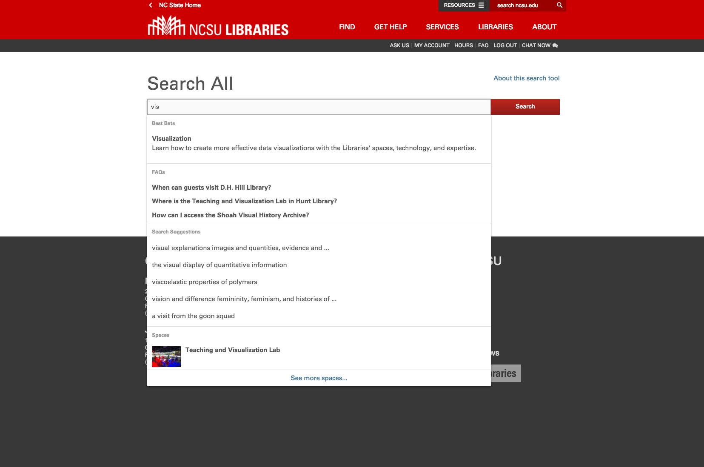

Where We're Headed With Bento-Box Search
Kevin Beswick, NCSU Libraries
@kbeswick
What is Bento-Box Search?
What is Bento-Box Search?
What is Bento-Box Search?
What isn't Bento-Box Search?
- The ultimate, robust discovery solution
- A search problem at all?
How Do We View Bento-Box Search?
- An opportunity for instruction
- A shortcut to known items or other search tools
- A recommendation problem
QuickSearch
- NCSU's bento-box search solution
- Initially created in 2005
- Rewritten in 2013 as a Ruby on Rails project
quick_search (or quick_search-core)
https://www.github.com/NCSU-Libraries/quick_search
- Open source version of QuickSearch released in 2016
- A toolkit for easily creating bento-box applications
- Extracted from NCSU's version
Features
- Rails Gem Engine - easy to install
- Modular & extensible
- Statistics (local & GA), Best Bets
Installation
- Create a new Rails project
- Add 'quick_search-core' gem & bundle install
- Run "rails g quick_search:install"
Searchers
- Plugins for QuickSearch that search an external service
- Small amount of code to implement
- Automatically hooks into QuickSearch infrastructure for stats collection, etc.
Available Searchers
- arXiv
- OpenLibrary
- Wikipedia
- Summon
- ContentDM (contributed by Temple University)
Statistics
QuickSearch automatically collects usage data for all searchers
- Queries (query text)
- Clicks (which box, which part of the box, etc.)
- Sessions (on/off campus, mobile/desktop, length)
Statistics Visualization
Near-term features
- Typeahead - backend support already there, frontend needs to be generalized & migrated from NCSU QS

NCSU Implementations
NCSU QuickSearch
- Our original QuickSearch
- Now running on open source gem in production since Jan.
- Working on extracting/generalizing last features into open source gem
Historical State Search
- Special Collections focused bento-box search
- Originally developed as an entirely separate application
- Migrated to QuickSearch core platform by Nushrat Khan
- Launched into production in Mar. 2017
Historical State Search
- Planning on releasing as open source as an example project that uses QuickSearch
- Also planning to release new searchers for lunr.js, and other services
Next Steps
- More library content:
- Events
- Spaces
- People
- Services
Next Steps
- Intelligence:
- Show results from more specialized sources depending on subject
- Use collected data for recommendations
- Promote library services
- Context-aware - device type, on/off campus
What could this look like?
What could this look like?
What could this look like?
Growing the QuickSearch community
- We're interested in working with people that are interested in using QuickSearch
- Help installing, customizing, creating new searchers
- Goal is to have a large collection of searchers for popular library services, and more examples of applications and themes.